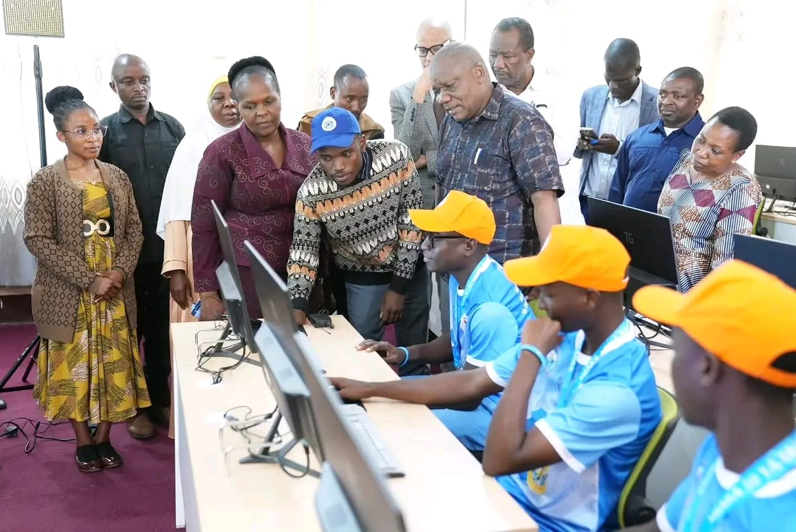

About Us
Magamba Secondary School is a government-supported school located in the Lushoto District of the Tanga Region, Tanzania, serving approximately 430 students from the surrounding area. Identified in NECTA results as S2944, the school offers advanced-level secondary education (ACSEE).
Modern Initiatives
Safe Drinking Water
The school has implemented safe drinking water projects, such as the SoWaDis plant installed by the waterkiosk foundation, ensuring students have constant access to clean water.
Vocational Training
In partnership with organizations like the Asante Africa Foundation, Magamba has introduced vocational training programs such as student-run fish farming, equipping learners with practical skills for the future.
ICT Development
In 2026, the Tanzania Institute of Education (TET) inaugurated a modern computer laboratory at Magamba Secondary School, equipped with 26 computers, digital teaching tools, and classroom furniture worth Sh 235.5 million. This milestone, achieved through the KLIC program in collaboration with South Korea, strengthens ICT integration in teaching and learning.
Teachers have also benefited from specialized training, including opportunities to attend short-term courses in Korea, enhancing their ability to deliver innovative digital education. The program has provided both equipment and professional development, ensuring Magamba remains at the forefront of ICT-based learning in Tanzania.


Historical Significance
Magamba is historically significant as the place where student Erasto Mpemba discovered the phenomenon now known worldwide as the Mpemba Effect.
The Mpemba Effect (1963)
In 1963, while preparing ice cream in a cooking course, Mpemba observed that hot mixture froze faster than cold mixture. His teacher dismissed the observation, but later, during a guest lecture by British physicist Dr. Denis Osborne, Mpemba asked his famous question about hot and cold water freezing.
Osborne invited Mpemba to the University of Dar es Salaam to test the claim. Though the experiments were crude, they found some evidence supporting Mpemba’s observation. In 1969, Mpemba and Osborne published a paper on the phenomenon, officially introducing the Mpemba Effect to the scientific community.
Today, Magamba Secondary School remains a landmark in the history of science and education in Tanzania, blending its proud heritage with modern initiatives that prepare students for the future.